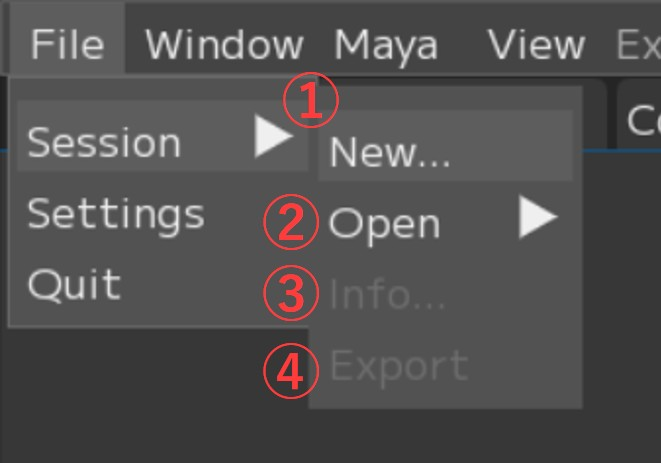
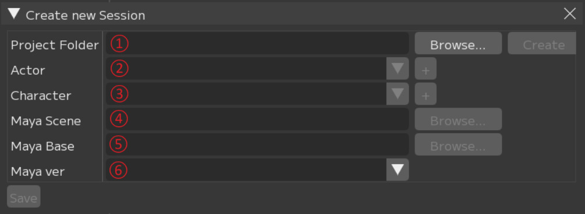

File
This section describes the menu items in the File menu related to project management, such as creating, saving, and loading Session files.

① Session: Session file related menu
② Settings: Please refer to Settings.
③ Quit: Exit FCS and delete the “.Lock file”
This is the menu related to Session files.
You can open a Session, change settings, create a new Session, and more.
{kind=link}

① New: Create a new Session and open the “Create new Session” window
② Open: Open a Session
- Open…: Select a .yaml file from the dialog to open a Session.
- “Path”: Displays the paths of recently used Sessions.
③ Info: Open the “Session Data” window
④ Export: Open the “Export Session” window to export a Session
- Session ▶ New
This is the window that opens when creating a new Session.
{kind=link}

① Project Folder: Path input field for the location (Root) where you want to store FCS working data
[Browse…]: Opens a dialog to specify the destination for the project folder.
[Create]: After entering the path, creates the FCS project folder.
② Actor: Input field for the actor (performer) name of the video to analyze
③ Character: Input field for the 3D model character name
[+] Opens the “Create new character folder” window to create a folder with the character name.
The character name will be added to the dropdown.
④ Maya Scene: Path input field for the 3D model Maya scene
[Browse…]: Opens a dialog to enter the path.
⑤ Maya Base: Enter the path to the folder containing “workspace.mel”
[Browse…]: Opens a dialog to enter the path.
⑥ Maya Ver: Specify the Maya version used to create the 3D model
Folder Structure Created by Create new Session

*Red frame: Folders created by Project Folder
*Blue frame: Folders created by Actor
*Green frame: Folders created by Character
Facial: Location for storing materials such as videos and Maya scene data
Assets: Stores Maya project files (under Assets)
RecData: Stores videos for ROM exercises and FCS analysis
Scene: Default output destination for animation export
SetData: Wav output destination when “audio” is selected in animation export
FCS: Project folder where data used for analysis is stored
Actor: Folder named after the Actor (the name you entered)
Character: Folder named after the Character (the name you entered)
RetargetData: Editing data for created Profiles
VideoData: Cache for analyzed videos
.lock: Lock file to prevent conflicts
fcs_session.yaml: File that stores Session information
- Session ▶ info
You can copy or edit the contents from the right-click menu.

Item |
Description |
Right-click Menu |
|---|---|---|
① Project Folder |
Project folder path |
Copy path |
② Actor |
Actor name |
Rename / Copy |
③ Character |
Character name |
Rename / Copy |
④ Maya Scene |
Maya scene path |
Copy / Change path |
⑤ Maya Base |
workspace.mel path |
Copy / Change path |
⑥ Maya version |
Maya version |
Copy / Change |
⑦ Profile Count |
Number of Profiles in Session |
Copy |
⑧ Video Count |
Number of videos imported into Session |
Copy |
⑨ Created at |
Session creation date/time |
Copy |
⑩ Created by |
Session creator |
Copy |
⑪ Last saved at |
Last saved date/time |
Copy |
⑫ Last saved by |
Last saved by |
Copy |
- Session ▶ Export
You can export the Session you have been working on.
For details on exporting Sessions, please refer to Workflow / Export.

① Project Folder: Specify the output destination
② Actor: Specify the actor name. * For archiving, you can leave it as is.
③ Character: Specify the character name. * For archiving, you can leave it as is.
④ Profile: Specify whether to export the current session’s profiles
⑤ Videos: Specify whether to copy video data to the output destination
- No video: Do not copy video data
- Associated video: Copy only associated videos
- All files: Copy all video data in Recdata
⑥ Facial/Assets Folder: Specify whether to copy the Facial/Assets folders to the output destination
Note
In the Project Folder field, specify the path of the destination project folder.
If the folder structure under the project folder does not exist,
new folders will be created automatically.
If you want to export testCharacter2 to the same level as E:\test\FCS\testActor\testCharacter, specify the output destination as follows.
Project Folder：E:\test
Character：testCharacter2
Menu Descriptions - Table of Contents
- File: Session file management and basic operations
- Settings: File/Settings - Global environment settings and behavior options for FCS
- Window: Display and operation guide for each window
- Maya: Launching and linking with Maya
- View: Adjusting the workspace layout
- Explore: Browsing files in Windows Explorer from FCS
- Info: Version information and more